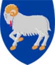
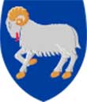

Historia
No se conoce con certeza la historia primigenia de las islas Feroe. Se cree que, hacia el siglo VI, ermitaños y clérigos de una misión hiberno-escocesa se asentaron en las islas, trayendo consigo ovejas y cabras, además de su idioma goidélico primitivo . Se dice que San Brandán, un santo monje irlandés que habría vivido entre 484 y 578, habría visitado las Feroe en dos o tres ocasiones (512-530), designando a dos de las islas como Isla Oveja e Isla Paraíso de las aves.
Según la Saga Færeyinga, los primeros habitantes de las islas llegaron de Noruega huyendo de la tiranía del rey Harald I, hacia fines del siglo IX. La tradición cuenta que el primer colono se llamaba Grímur Kamban, que fundó el primer asentamiento, Funningur, en el noroeste de Eysturoy. Sin embargo, los colonos nórdicos llegaron mucho antes (c. 650), trayendo el idioma nórdico antiguo, que dio lugar al idioma feroés hablado en la actualidad. Se cree que los colonos no vinieron directamente desde Escandinavia, sino que eran nórdico-gaélicos procedentes de Shetland y las Orcadas, y de las zonas próximas al mar de Irlanda y a las Islas Hébridas Exteriores de Escocia. El nombre de las islas en gaélico antiguo es Na Scigirí, que significa el Skeggjar y probablemente hace referencia a Eyja-Skeggjar (los barbudos de las islas), apelativo que se daba a los habitantes de las Feroe.
 
